Follow the step by step below to prepare your application.
!!NOTE!!
If you just want to start developing your application, you can skip following steps and start developing an application right away, as this project is registered to Azure AD managed by Kenichiro Nakamura for test. Please note that if you register your application to Windows Phone Store, then you MUST register your application to your Microsoft Azure AD because RedirectUri will be changed, and existing registration won't work. In addition, I have no guranttee to maintain current registration.
Register Your Application.
This template uses Active Directory Authentication Library (ADAL) to authenticate the application using OAuth 2.0 against Microsoft Azure Active Direcotry (AAD) in case of CRM Online, or Active Directory Federation Service (AD FS) in case of CRM On-Premise. To make it happen, you need to register your application to AAD/ADFS. Following step by step explains how to register your application to AAD.
1. First of all, obtain RedirectUri value which you use to register your application. Go to OrganizationServiceProxy.cs file, which opens next to this tutorial, then put breakpoint at line 196.
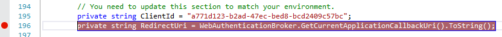
2. Run the application with debug mode. When the breakpoint hit, press F10 to move to next line and mouse over to RedirectUri, which gives you a RedirectUri value.
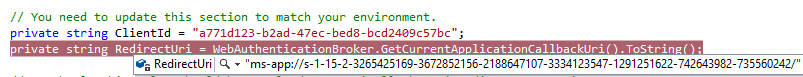
3. Once you obtained RedirectUri, go to Microsoft Azure Portal. (http://manage.windowsazure.com)
4. Select Active Directoryon the left pane, and select your directory.
5. Click APPLICATIONS menu on the top, then click ADD button in the bottom.
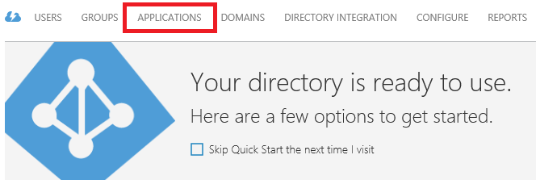
6. Select “Add an application my organization is developing. Click next icon.
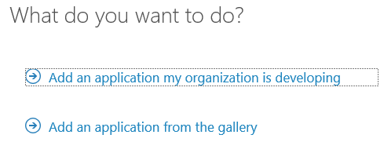
7. Enter any name and select "NATIVE CLIENT APPLICATION" option. Click next icon.
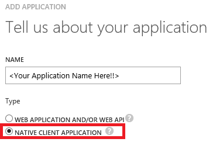
8. Enter RedirectUri you just obtained. Click next icon.
9. Once registration completed, click CONFIGURE menu.
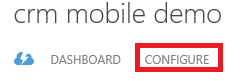
10. Copy a CLIENT ID, which you will update the code by it.
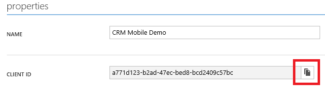
11. Navigate to bottom of the page to setup impersonation. Click "Add application".
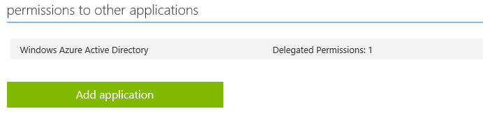
12. Select "Dynamics CRM Online" from Select application dropdown, and select "Access CRM Online as organization users."
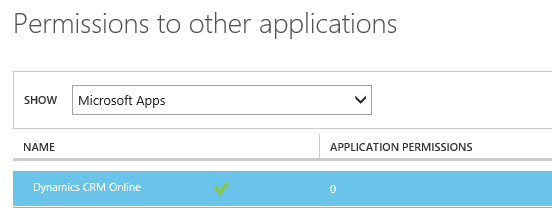
13. Click Delegate Permission and check "Access CRM Online as organizaion users".
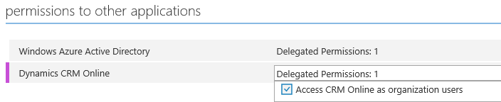
14. Click "SAVE" to save the change.
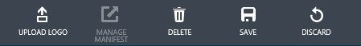
15. Come back to this project and open OrganizaionServiceProxy.cs file. Replace existing ClientId to new value at line 195.